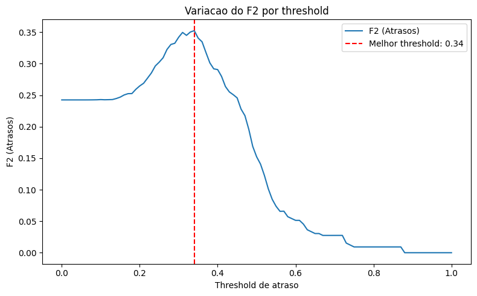
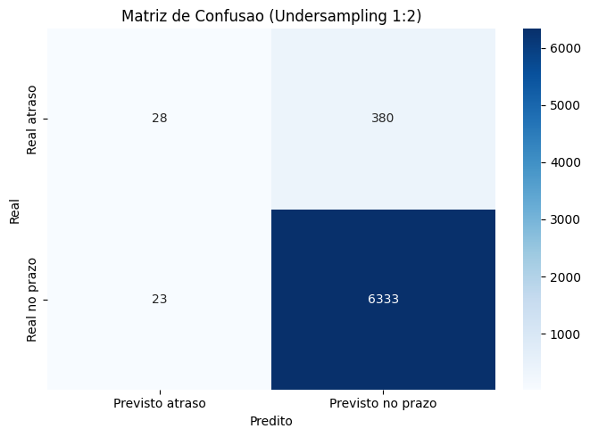
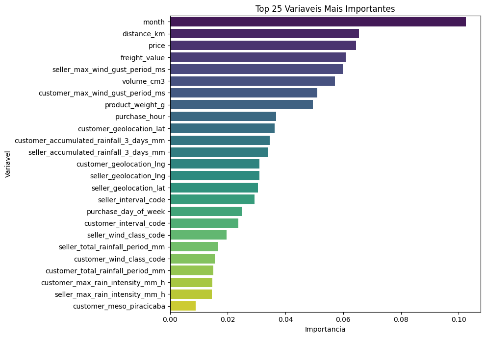
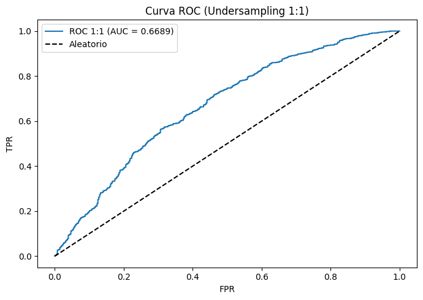

Objetivo do Modelo
O Random Forest foi implementado para classificar entregas em Atraso (0) ou No Prazo (1). Por ser um modelo de Ensemble, ele combina múltiplas árvores para reduzir a variância e melhorar a robustez da predição em dados logísticos complexos.
Melhores Hiperparâmetros (Ajustados via Grid Search)
- n_estimators: 207
- max_depth: 12
- min_samples_leaf: 8
- min_samples_split: 11
- max_features: 'sqrt'
- max_samples: 0.7
Threshold de decisão ótimo (F2 Max): 0.3407
Otimização do Threshold (Ponto de Corte)
Diferente de modelos padrão que usam 0.5 como corte, ajustamos o threshold para maximizar o F2 Score, garantindo que o modelo seja sensível o suficiente para detectar atrasos sem perder totalmente a precisão.
F2-Score vs Threshold

O ponto mais alto desta curva representa o nosso threshold ótimo de 0.34.
É neste valor que conseguimos o melhor equilíbrio para a detecção de atrasos no last
mile.
Estratégia de Undersampling
Para lidar com o desbalanceamento (muito mais entregas no prazo do que atrasadas), testamos três níveis de Random Undersampling no treino. O objetivo é evitar que o modelo ignore a classe minoritária.
Comparativo de Performance por Balanceamento
O impacto da proporção de Undersampling no conjunto de teste para a detecção de atrasos:
| Proporção (Atraso:No Prazo) | Recall (Atrasos) | F2-Score | Status Operacional |
|---|---|---|---|
| 1:1 | 0.2549 | 0.2244 | Melhor para Operação |
| 1:2 | 0.0441 | 0.0541 | Sensibilidade Reduzida |
| 1:3 | 0.0319 | 0.0395 | Inviável (Ignora atrasos) |
Observação: A proporção 1:1 apresenta um Recall significativamente superior. Embora sacrifique a acurácia global, é a única configuração que permite identificar um volume útil de atrasos reais para a tomada de decisão logística.
Visualizações e Matrizes de Confusão
Matriz Original
O modelo aprendeu que a grande maioria das entregas chega No Prazo (Classe 1). Por conta disso, ele tende a chutar que quase tudo vai dar certo para manter uma acurácia alta.
Matriz 1:1 (Recomendada)
Detecta o maior volume de atrasos reais, essencial para a gestão de riscos.
Matriz 1:2

O modelo torna-se muito conservador e falha em identificar riscos.
Matriz 1:3
Comportamento similar ao dado original desbalanceado: baixa utilidade prática.
Importância das Features

As variáveis month e distance_km dominam a tomada de decisão do modelo.
Curva ROC (Modelo 1:1)

AUC de 0.66: Indica uma capacidade de separação moderada entre as classes.
Conclusão
- Escolha do Modelo: A configuração 1:1 é a única viável para o negócio, pois as outras (1:2 e 1:3) apresentam um Recall extremamente baixo, sendo incapazes de alertar a operação sobre possíveis problemas.
- Ponto de Corte: Utilizar o threshold de 0.34 em vez do padrão 0.5, que torna o modelo mais sensível ao identificar atrasos reais.